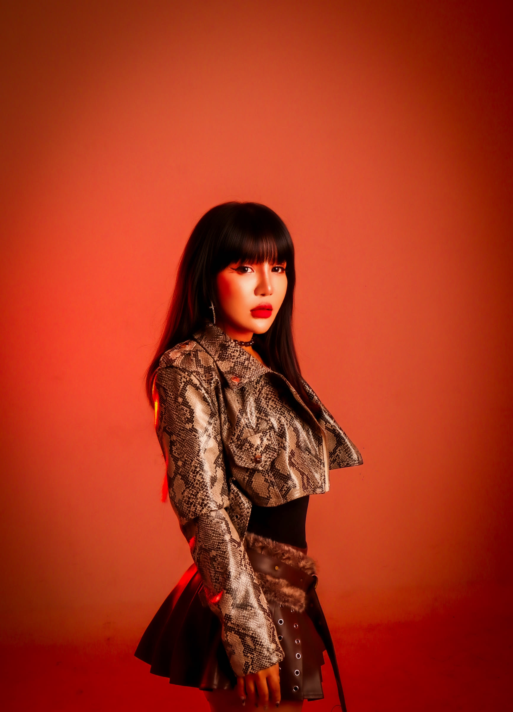
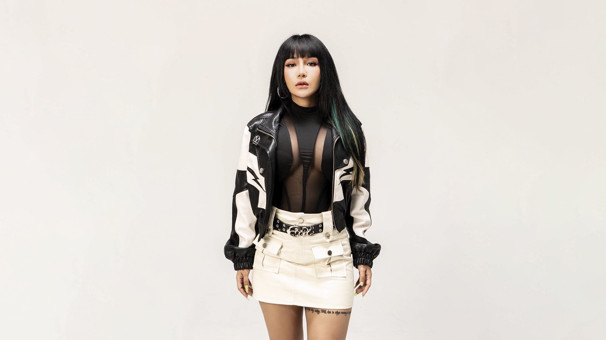

[ 01 ] About
Bass-driven sets from
Myanmar to the 
region
LOLLY is a Myanmar-based DJ and producer with over a decade of experience, actively contributing to the country's electronic music scene. Known for energetic bass-driven performances and a distinctive stage presence, LOLLY seamlessly blends Bass, Drum & Bass, Jersey Club, Trap, Bounce, Midtempo, House, and other electronic music genres. With dynamic track selection and smooth transitions, LOLLY consistently delivers performances that captivate audiences from start to finish.

After completing the Music Production Program at AES Myanmar, LOLLY has continued to create and release original tracks and remixes. As the founder of THE LOLLYISM, LOLLY has successfully organized personal event series to help grow the electronic music community and build a strong fan base. Through original music, high-energy performances, and regional collaborations, LOLLY continues to expand an artistic journey with the goal of representing Myanmar on both regional and international stages.
- Base
- Yangon, Myanmar
- Study
- Music Production Program, AES Myanmar
- Founder
- THE LOLLYISM
[ 02 ] By the numbers
- 10+years behind the decks
- 10club residencies
- 32venues played
- 8cities
- 2countries
- 7original releases

[ 03 ] Showreel
[ 04 ] Video
Watch Lolly play
[ 05 ] Residencies
2015 → 2024
[ 06 ] Clubs & Tours